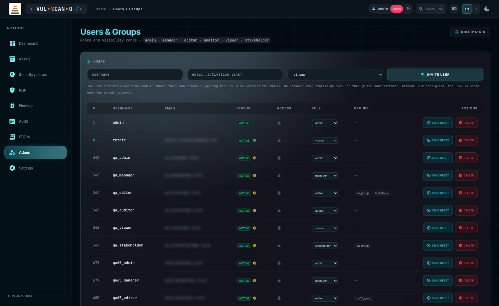
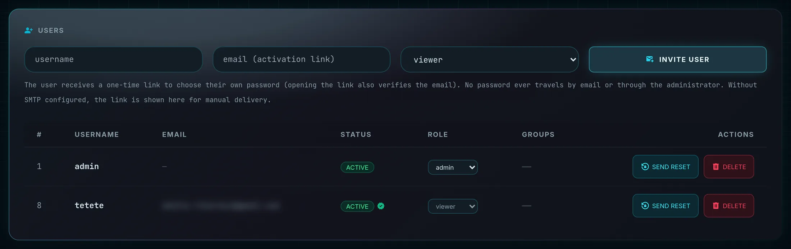
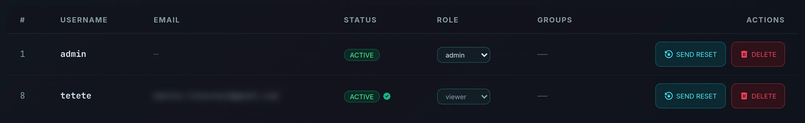
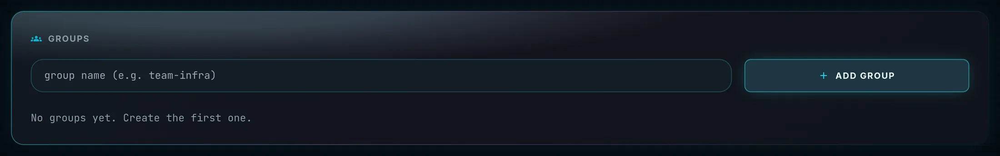
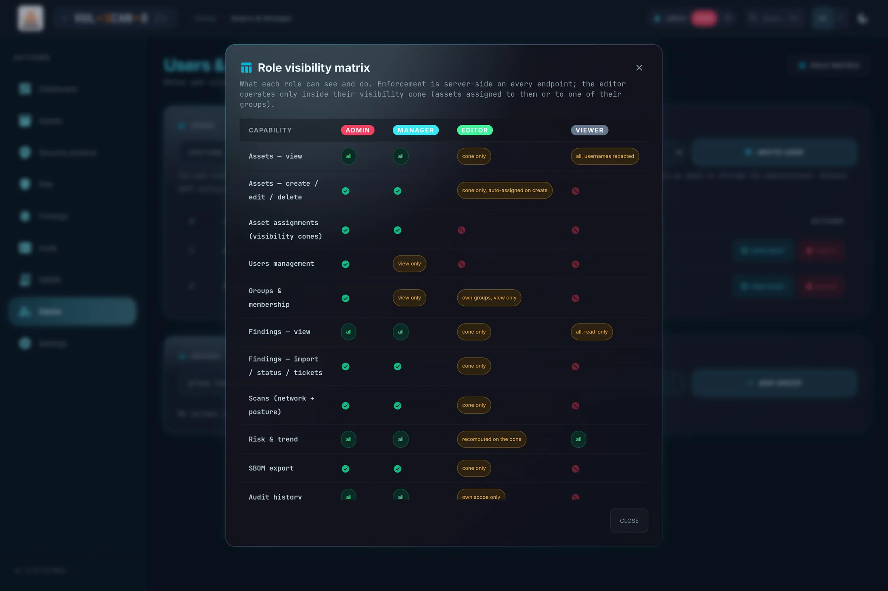

Users, groups and visibility conesUtenti, gruppi e coni di visibilità
Identity and access management. You create users by invitation — never by handing out a password — assign roles, organise people into groups and drive password resets.
Gestione di identità e accessi. Gli utenti si creano per invito — mai distribuendo una password — assegnando ruoli, organizzando le persone in gruppi e avviando i reset di password.
Page OverviewPanoramica admin only (manager: read-only user list through the API)solo admin (manager: elenco utenti in sola lettura via API)
The subtitle sets the frame: “Roles and visibility cones.” This page defines who exists and what kind of user they are; the ASSIGNED column in /assets defines which assets they can see. Together those two decisions produce every visibility cone in the installation.
Il sottotitolo inquadra il tema: «Roles and visibility cones.» Questa pagina definisce chi esiste e di che tipo di utente si tratta; la colonna ASSIGNED in /assets definisce quali asset può vedere. Insieme, queste due decisioni producono ogni cono di visibilità dell'installazione.

The four rolesI quattro ruoli
| RoleRuolo | ScopeAmbito | Typical holderChi lo riceve tipicamente |
|---|---|---|
| admin | Everything, including application configuration and user and group management.Tutto, inclusi la configurazione dell'applicazione e la gestione di utenti e gruppi. | Platform owner.Responsabile della piattaforma. |
| manager | Everything except writing configuration and managing users; manages asset assignments; full audit access.Tutto tranne scrivere la configurazione e gestire gli utenti; gestisce le assegnazioni degli asset; accesso completo all'audit. | Security lead.Responsabile della sicurezza. |
| editor | Works only inside their visibility cone — the assets assigned to them directly or through one of their groups.Opera solo dentro il proprio cono di visibilità — gli asset assegnati direttamente a lui o tramite un suo gruppo. | Team engineer.Tecnico di team. |
| viewer | Read-only: no scans, no imports, no exports, no audit page; asset usernames are redacted.Sola lettura: nessuna scansione, nessun import, nessun export, nessuna pagina audit; gli username degli asset sono oscurati. | Auditor, stakeholder.Auditor, stakeholder. |
Roles take effect immediately: the session token carries only the user id and its expiry, and role and group membership are re-read from the database on every request. There is no stale-claim window to wait out after a demotion.
I ruoli hanno effetto immediato: il token di sessione contiene solo l'id utente e la sua scadenza, e ruolo e appartenenza ai gruppi vengono riletti dal database a ogni richiesta. Non c'è alcuna finestra di claim obsoleti da attendere dopo una retrocessione.
USERS

Features Breakdown — invitationDettaglio funzionalità — invito
| ControlControllo | BehaviourComportamento |
|---|---|
| username | The login name — unique and required.Il nome di accesso — unico e obbligatorio. |
| email (activation link) | The destination for the one-time activation link — unique and required.La destinazione del link di attivazione monouso — unica e obbligatoria. |
| Role selectorSelettore ruolo | admin / manager / editor / viewer |
| INVITE USER |
POST /api/users followed by POST /api/users/{id}/invite. Generates a one-time token of 32 random bytes, stores only its SHA-256 hash with a 48-hour expiry, and emails the /activate?token=… link. Submitting with a field missing raises “username and email are required”.
POST /api/users seguito da POST /api/users/{id}/invite. Genera un token monouso di 32 byte casuali, salva solo il suo hash SHA-256 con scadenza 48 ore e invia via email il link /activate?token=…. Inviando con un campo mancante compare «username and email are required».
|
| Invite hintNota sull'invito | “The user receives a one-time link to choose their own password (opening the link also verifies the email). No password ever travels by email or through the administrator. Without SMTP configured, the link is shown here for manual delivery.”«The user receives a one-time link to choose their own password (opening the link also verifies the email). No password ever travels by email or through the administrator. Without SMTP configured, the link is shown here for manual delivery.» |
| Manual link boxRiquadro link manuale | When SMTP is not configured: “Deliver this link manually:” followed by the URL. The whole onboarding flow works without email — you just become the delivery channel.Quando SMTP non è configurato: «Deliver this link manually:» seguito dall'URL. L'intero flusso di onboarding funziona senza email — diventi semplicemente tu il canale di consegna. |
| ConfirmationConferma | “Email sent to {email}” |
Admin (/admin): INVITE USER — username + email + role
│
▼
app generates a one-time token (32 random bytes)l'app genera un token monouso (32 byte casuali)
→ only its SHA-256 hash is stored, with a 48 h expiryviene salvato solo il suo hash SHA-256, con scadenza 48 h
│
▼
email to the user with the activation link /activate?token=…email all'utente con il link di attivazione /activate?token=…
(no SMTP → the link is shown to the admin for manual deliverysenza SMTP → il link è mostrato all'admin per consegna manuale)
│
▼
the user opens the link and chooses their own password (min 12 chars)l'utente apre il link e sceglie la propria password (min 12 caratteri)
│
▼
password set + account activated + email implicitly VERIFIED + token burnedpassword impostata + account attivato + email implicitamente VERIFICATA + token bruciatoFeatures Breakdown — the users tableDettaglio funzionalità — la tabella utenti

| ColumnColonna | Content and behaviourContenuto e comportamento |
|---|---|
| USERNAME / EMAIL | Identity.Identità. |
| STATUS | PENDING — invited, link not yet used. ACTIVE — password set. Plus three informative badges: Email verified, Email NOT verified, and Password change forced at next login. PENDING — invitato, link non ancora usato. ACTIVE — password impostata. Più tre badge informativi: Email verified, Email NOT verified e Password change forced at next login. |
| ROLE | Inline dropdown — PUT /api/users/{id}, confirmed by “Role updated”. It applies on the user's very next request.Menu in linea — PUT /api/users/{id}, confermato da «Role updated». Si applica già alla richiesta successiva dell'utente. |
| GROUPS | Membership chips; editing them calls PUT /api/groups/{id}/members and confirms with “Membership updated”.Chip di appartenenza; modificandoli si chiama PUT /api/groups/{id}/members con conferma «Membership updated». |
| ACTIONS |
SEND RESET — POST /api/users/{id}/reset, asks “Send a password-reset link to {u}?” then emails a 4-hour link.RESEND INVITE — issues a fresh activation token for a pending user whose link expired. DELETE — DELETE /api/users/{id}, asks “Delete user {u}?”, confirms with “User deleted”.
SEND RESET — POST /api/users/{id}/reset, chiede «Send a password-reset link to {u}?» e invia un link valido 4 ore.RESEND INVITE — emette un nuovo token di attivazione per un utente pendente il cui link è scaduto. DELETE — DELETE /api/users/{id}, chiede «Delete user {u}?», conferma con «User deleted».
|
Empty state: “No users.”
Stato vuoto: «No users.»
PUT /api/users/{id} with a
password field) is supported as a fallback, but it flags the account
must_change_password: the user must change it at the next login before doing anything else.
Impostare una password direttamente via API (PUT /api/users/{id} con un campo
password) è supportato come ripiego, ma marca l'account con
must_change_password: l'utente dovrà cambiarla al successivo accesso prima di poter fare
altro.
GROUPS

| ControlControllo | BehaviourComportamento |
|---|---|
| group name | A unique name, for example team-infra — the placeholder suggests that convention.Un nome unico, per esempio team-infra — il placeholder suggerisce questa convenzione. |
| ADD GROUP | POST /api/groups → “Group created” |
| DELETE | DELETE /api/groups/{id}, with the warning “Delete group {g}? Its asset assignments will be removed.” Members are not deleted — only the group and the access it granted.DELETE /api/groups/{id}, con l'avviso «Delete group {g}? Its asset assignments will be removed.» I membri non vengono eliminati — solo il gruppo e l'accesso che concedeva. |
| Empty stateStato vuoto | “No groups yet. Create the first one.” |
ROLE MATRIX

The ROLE MATRIX button opens a modal listing every capability — assets view and write, asset assignments, users management, groups and membership, findings view and write, scans, risk and trend, SBOM export, audit history, settings view and write — against the four roles. Its header states the rule the whole product follows: “Enforcement is server-side on every endpoint; the editor operates only inside their visibility cone.”
Il pulsante ROLE MATRIX apre una finestra che elenca ogni capacità — vista e scrittura degli asset, assegnazioni, gestione utenti, gruppi e appartenenze, vista e scrittura dei finding, scansioni, rischio e tendenza, export SBOM, storico audit, vista e scrittura delle impostazioni — rispetto ai quattro ruoli. L'intestazione dichiara la regola che l'intero prodotto segue: «Enforcement is server-side on every endpoint; the editor operates only inside their visibility cone.»
Cells are qualified rather than binary, which is what makes the matrix genuinely useful:
Le celle sono qualificate invece che binarie, ed è ciò che rende la matrice davvero utile:
- all — unrestricted.senza restrizioni.
- cone only — limited to assigned assets.limitato agli asset assegnati.
- cone only, auto-assigned on create — an editor's new assets land inside their own cone.i nuovi asset di un editor finiscono nel suo stesso cono.
- recomputed on the cone — aggregates are rebuilt, not masked.gli aggregati vengono ricostruiti, non mascherati.
- all, usernames redacted — a viewer sees the assets but not the accounts.un viewer vede gli asset ma non gli account.
- all, read-only · view only · own groups, view only · own scope only.
A full text version of the matrix is in Appendix A.
Una versione testuale completa della matrice è in Appendice A.
Procedures and expected outcomesProcedure e risultati attesi
How It Works — onboard a team memberCome funziona — inserire un membro del team
- Sign in as admin and open Admin.Accedi come admin e apri Admin.
- Create the groups that mirror your teams first (
team-infra,team-app…). Group-based cones age far better than per-user assignments.Crea prima i gruppi che rispecchiano i tuoi team (team-infra,team-app…). I coni basati sui gruppi invecchiano molto meglio delle assegnazioni per singolo utente. - Fill username and email, pick the role, press INVITE USER.Compila username ed email, scegli il ruolo, premi INVITE USER.
- With SMTP configured you get “Email sent to {email}”. Without it, copy the link from “Deliver this link manually” and send it over a channel you trust.Con SMTP configurato ottieni «Email sent to {email}». Senza, copia il link da «Deliver this link manually» e inviarlo su un canale di cui ti fidi.
- Add the user to their group or groups in the GROUPS column.Aggiungi l'utente al suo gruppo o ai suoi gruppi nella colonna GROUPS.
- Go to /assets and assign the relevant assets to that group.Vai in /assets e assegna gli asset pertinenti a quel gruppo.
- Verify the cone: have the user sign in and confirm they see exactly those assets — nothing more, on any page.Verifica il cono: fai accedere l'utente e conferma che veda esattamente quegli asset — nulla di più, su nessuna pagina.
How It Works — reset a forgotten passwordCome funziona — reimpostare una password dimenticata
- Find the user, press SEND RESET and confirm.Trova l'utente, premi SEND RESET e conferma.
- The user receives a 4-hour one-time link and chooses their own password at /activate.L'utente riceve un link monouso valido 4 ore e sceglie la propria password su /activate.
- You never see or type their password, and all of their existing sessions are invalidated the moment they change it.Non vedi né digiti mai la sua password, e tutte le sue sessioni esistenti vengono invalidate nel momento in cui la cambia.